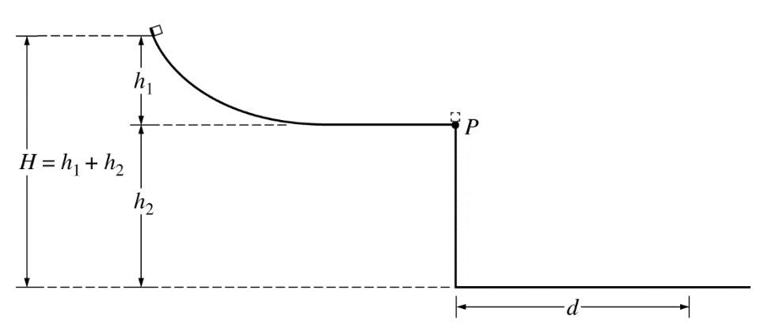

layout: true <div class="my-header"><img src="../figures/scsdLogo.png" style="height: 70px;"/></div> --- class: center, middle .title[AP Exam Review] .subtitle[*Final Review*] .author[👨🏻🏫 Nathan Porter] .institution[🏫 Maple Hill High School] .coauthor[] .institution[] .date[📅 2019-2020] .center[] <!--.footnote[Created with [{Remark.js}](http://remarkjs.com/) using [{Markdown}](https://daringfireball.net/projects/markdown/) + [{MathJax}](https://www.mathjax.org/)]--> --- class:photoback background-image: url("https://media.giphy.com/media/2vlmXyWEEDm7korr7N/source.gif") #Welcome Questions -- ##How are you doing? -- ##Anyone have anything to share? -- ##Questions before we begin? --- #What you will have to do: - Combine multiple concepts + models -- - think about how the models work together/against each together -- --- #For Example: .center[<img src="../figures/atwoodlaunch.png" width = "800 px"/>] ??? Forces into kinematics into projectile motion Projectile motion, always talk about flight time! --- #Paragraph .center[] The figure above shows part of a system consisting of a block at the top of an inclined plane that rests on a table, which is located on Earth. The block and plane are at rest when the block is released. In trial 1 there is no friction between the block and the plane or between the plane and the table. In trial 2 the plane is fixed to the table so it cannot move, but there is still no friction between the block and the plane. Indicate whether the speed of the block relative to the table when the block reaches the bottom of the plane is greater in trial 1 or trial 2. Justify your answer in a clear, coherent, paragraph- length explanation. ??? 1 point is earned for any mention of energy conversion 1 point is earned f or indicating that the same amount of potential energy is converted to kinetic energy in each trial 1 point is earned for indicating that the kinetic energy is shared between the block and plane in trial 1 1 point is earned for indicating that the block has all the kinetic energy in trial 2 1 point is earned for a description of the motion of the plane in each trial 1 point is earned for using momentum or forces to explain the motion in each trial 1 point is earned for a coherent argument that leads to a correct conclusion --- .center[<img src="../figures/pumpkin.PNG" width = "900 px"/>] ??? For using conservation of momentum Note: This point is earned for an indication of how momentum conservation applies to the situation. 1 point For correctly stating or implying that in all three cases the magnitude of the change in the horizontal momentum of the arrow during the collision equals magnitude of the momentum gained by the pumpkin 1 point For a valid argument explaining why the Bounce arrow must transfer the most momentum 1 point For stating that the Pass arrow ends up faster than the Embedded arrow or does not transfer as much momentum to the pumpkin immediately after collision 1 point For indicating (regardless of conclusion about whether the Pass or Embedded arrow ends up going faster after the collision) that the arrow that slowed more during the collision transfers more momentum to the pumpkin 1 point For an explicit or implicit correct justification, in terms of energy conservation, that the angle reached by the pumpkin is related to the speed of the pumpkin just after the collision 1 point For a logical, relevant, and internally consistent response that addresses the required argument or question asked, and follows the guidelines described in the published requirements for the paragraph-length response --- .center[] A student releases a block of mass `\(m\)` from rest at the top of a slie of height `\(h_1\)`. The block moves down the slide and off the end of a table of height `\(h_2\)`, landing on the floor a horizontal distance `\(d\)` from the edge of the table. Friction and air resistance are negligible. The overall height `\(H\)` of the setup is determined by the height of the room. Therefore, if `\(h_1\)` is increased, `\(h_2\)` must decrease by the same amount so that the sum `\(h_1 + h_2\)` remains equal to `\(H\)`. The student wants to adjust `\(h_1\)` and `\(h_2\)` to make `\(d\)` as large as possible. (a) i. Without using equations, explain why making `\(h_1\)` very small would cause `\(d\)` to be small, even though `\(h_2\)` would be large. --- .center[] A student releases a block of mass `\(m\)` from rest at the top of a slie of height `\(h_1\)`. The block moves down the slide and off the end of a table of height `\(h_2\)`, landing on the floor a horizontal distance `\(d\)` from the edge of the table. Friction and air resistance are negligible. The overall height `\(H\)` of the setup is determined by the height of the room. Therefore, if `\(h_1\)` is increased, `\(h_2\)` must decrease by the same amount so that the sum `\(h_1 + h_2\)` remains equal to `\(H\)`. The student wants to adjust `\(h_1\)` and `\(h_2\)` to make `\(d\)` as large as possible. (a) ii. Without using equations, explain why making `\(h_2\)` very small would cause `\(d\)` to be small, even though `\(h_1\)` would be large. --- .center[] A student releases a block of mass `\(m\)` from rest at the top of a slie of height `\(h_1\)`. The block moves down the slide and off the end of a table of height `\(h_2\)`, landing on the floor a horizontal distance `\(d\)` from the edge of the table. Friction and air resistance are negligible. The overall height `\(H\)` of the setup is determined by the height of the room. Therefore, if `\(h_1\)` is increased, `\(h_2\)` must decrease by the same amount so that the sum `\(h_1 + h_2\)` remains equal to `\(H\)`. The student wants to adjust `\(h_1\)` and `\(h_2\)` to make `\(d\)` as large as possible. (b) Derive an equation for `\(d\)` in terms of `\(h_1\)`, `\(h_2\)`, and `\(m\)`, and physical constants as appropriate. -- Hint 1: Start with energy to find launch speed -- Hint 2: Find flight time -- Hint 3: `\(d = vt\)` for horizontal projectile --- .left-column[ Hint 1: Energy $$mgh_1 = \frac{1}{2}mv_1^2 $$ $$ v_1 = \sqrt{2gh_1}$$ ] -- .right-column[ Hint 2: Flight Time $$y = y_0 + v_0 t + \frac{1}{2}at^2$$ $$h_2 = \frac{1}{2}gt^2$$ $$t = \sqrt{\frac{2h_2}{g}}$$ ] -- Hint 3: Horizontal Projectile: $$d = v_1 t = \sqrt{2gh_1} \sqrt{\frac{2h_2}{g}} = 2\sqrt{h_1 h_2}$$ --- .center[] A student releases a block of mass `\(m\)` from rest at the top of a slie of height `\(h_1\)`. The block moves down the slide and off the end of a table of height `\(h_2\)`, landing on the floor a horizontal distance `\(d\)` from the edge of the table. Friction and air resistance are negligible. The overall height `\(H\)` of the setup is determined by the height of the room. Therefore, if `\(h_1\)` is increased, `\(h_2\)` must decrease by the same amount so that the sum `\(h_1 + h_2\)` remains equal to `\(H\)`. The student wants to adjust `\(h_1\)` and `\(h_2\)` to make `\(d\)` as large as possible. (c) i. Write the equation or step in your derivation from part (b) (not your final answer) that supports your reasoning in part (a)i [`\(h_1\)` small]. Briefly explain your choice. --- .center[] A student releases a block of mass `\(m\)` from rest at the top of a slie of height `\(h_1\)`. The block moves down the slide and off the end of a table of height `\(h_2\)`, landing on the floor a horizontal distance `\(d\)` from the edge of the table. Friction and air resistance are negligible. The overall height `\(H\)` of the setup is determined by the height of the room. Therefore, if `\(h_1\)` is increased, `\(h_2\)` must decrease by the same amount so that the sum `\(h_1 + h_2\)` remains equal to `\(H\)`. The student wants to adjust `\(h_1\)` and `\(h_2\)` to make `\(d\)` as large as possible. (c) ii. Write the equation or step in your derivation from part (b) (not your final answer) that supports your reasoning in part (a)ii [`\(h_2\)` small]. Briefly explain your choice. --- .center[] A student releases a block of mass `\(m\)` from rest at the top of a slie of height `\(h_1\)`. The block moves down the slide and off the end of a table of height `\(h_2\)`, landing on the floor a horizontal distance `\(d\)` from the edge of the table. Friction and air resistance are negligible. The overall height `\(H\)` of the setup is determined by the height of the room. Therefore, if `\(h_1\)` is increased, `\(h_2\)` must decrease by the same amount so that the sum `\(h_1 + h_2\)` remains equal to `\(H\)`. The student wants to adjust `\(h_1\)` and `\(h_2\)` to make `\(d\)` as large as possible. (d) If the experiment is repeated on the Moon without changing `\(h_1\)` or `\(h_2\)`, will the new landing distance `\(d\)` be greater than, less than, or the same as the landing distance when the experiment is performed on Earth? Briefly explain how you arrived at your answer. ---